It is a dish composed of pork slices cooked in soy sauce, vinegar, and garlic. There are version wherein onions are also added. Adobo is a popular dish in the Philippines, along with Sinigang. Adobo, in general, can be cooked using different kinds of protein.
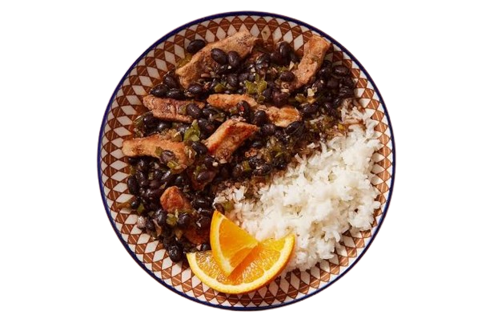
P150.00
It is a dish that consists of a stew of black beans with various types of pork and beef. It is served with farofa, white rice, sautéed kale, and sliced oranges, among other sides. It is a popular dish, typical of Brazilian cuisine.
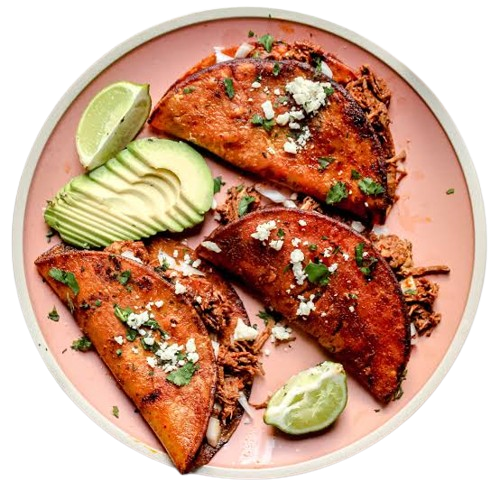
P80.00
It is traditionally a spicy and super savory Mexican beef or goat stew that’s slow cooked until the meat is tender and fall-apart juicy and delicious. Someone had the amazing idea to stuff this meaty goodness into a taco shell, and then dip the whole thing into the stew and fry it up.
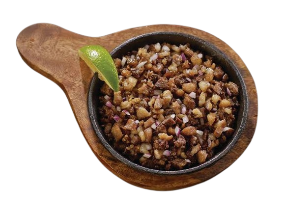
P120.00
A Filipino dish made from pork jowl and ears (maskara), pork belly, and chicken liver, which is usually seasoned with calamansi, onions, and chilli peppers. It originates from the Pampanga region in Luzon.
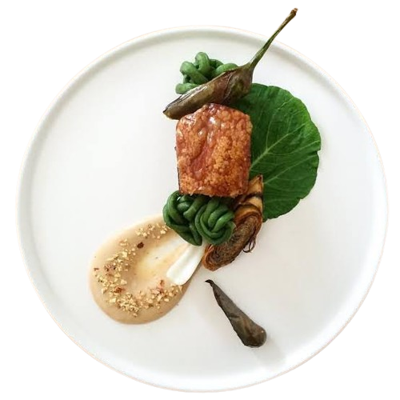
P140.00
It is a traditional Filipino stew complimented with a thick savory peanut sauce. The commonly used meats for this dish are ox tail, tripe, and pork leg. Besides the peanuts, this dish depends on the shrimp paste (on the side).
2
Vegetables (Verduras)
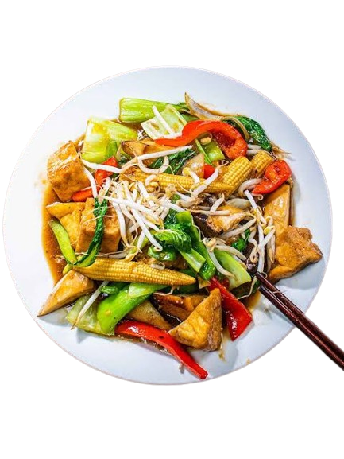
P150.00
It is a stir-fried vegetable dish that is cooked with meats such as chicken and pork. Shrimp and seafood can also be added. This chop suey recipe is special because it has almost every ingredient present. Chicken, pork, shrimp, and boiled quail eggs were all included in the recipe, along with fresh veggies.
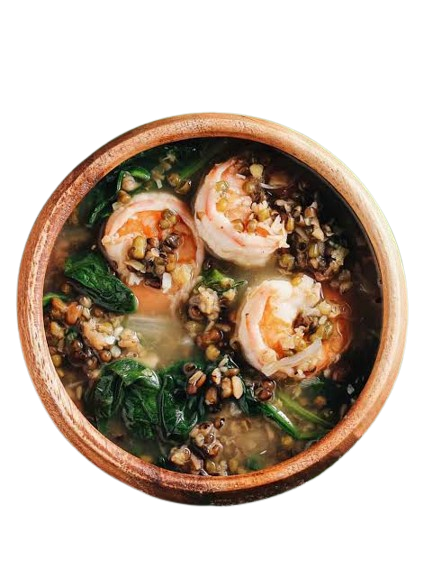
P60.00
It is known to best describe the feeling of home-cooked meals from that particular country. But Ginisang Munggo is perhaps one of the best standout dishes that can definitely bring to you the comfort of a Filipino dishes.
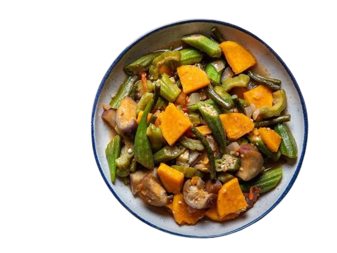
P110.00
It is a Filipino vegetable dish. It is composed of a variety of vegetables and it also has a protein component. I made use of lechon kawali or crispy deep-fried pork belly for this recipe. This recipe is a variation of the popular Pinakbet Ilocano.
3
Desserts (Postres)
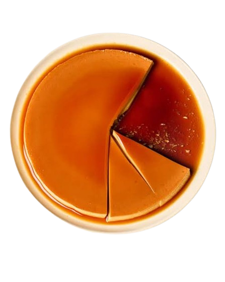
P55.00
It is a dessert made-up of eggs and milk with a soft caramel on top. It resembles crème caramel and caramel custard. It has been a regular item in the menu of most restaurants because of its taste, ease in preparation and long shelf life.
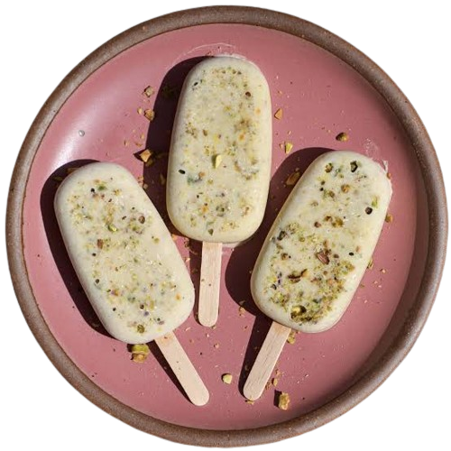
P30.00
Traditionally, kulfi is made by simmering milk overnight in a type of wok called a kadai. The simmering process is complete once the milk develops a rich flavor from the caramelization of the milk proteins.
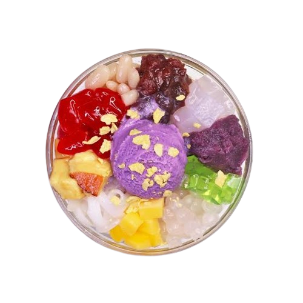
P130.00
It is one of my favorite summertime desserts. From the Philippines—the name means “mix-mix" in Tagalog—the refreshing dish layers shaved ice and condensed milk on top of all sorts of ingredients for an end result that packs in lots of contrasting textures, from chewy to crunchy, creamy to sticky.
4
Drinks (Bebidas)
P570.00
It is a distilled alcohol that is usually clear and lacking a noticeable aroma or taste. Different styles and varieties of distilled vodka come from Russia, Poland and Sweden, but any liquor made from water and agricultural ethanol can be classified as vodka.
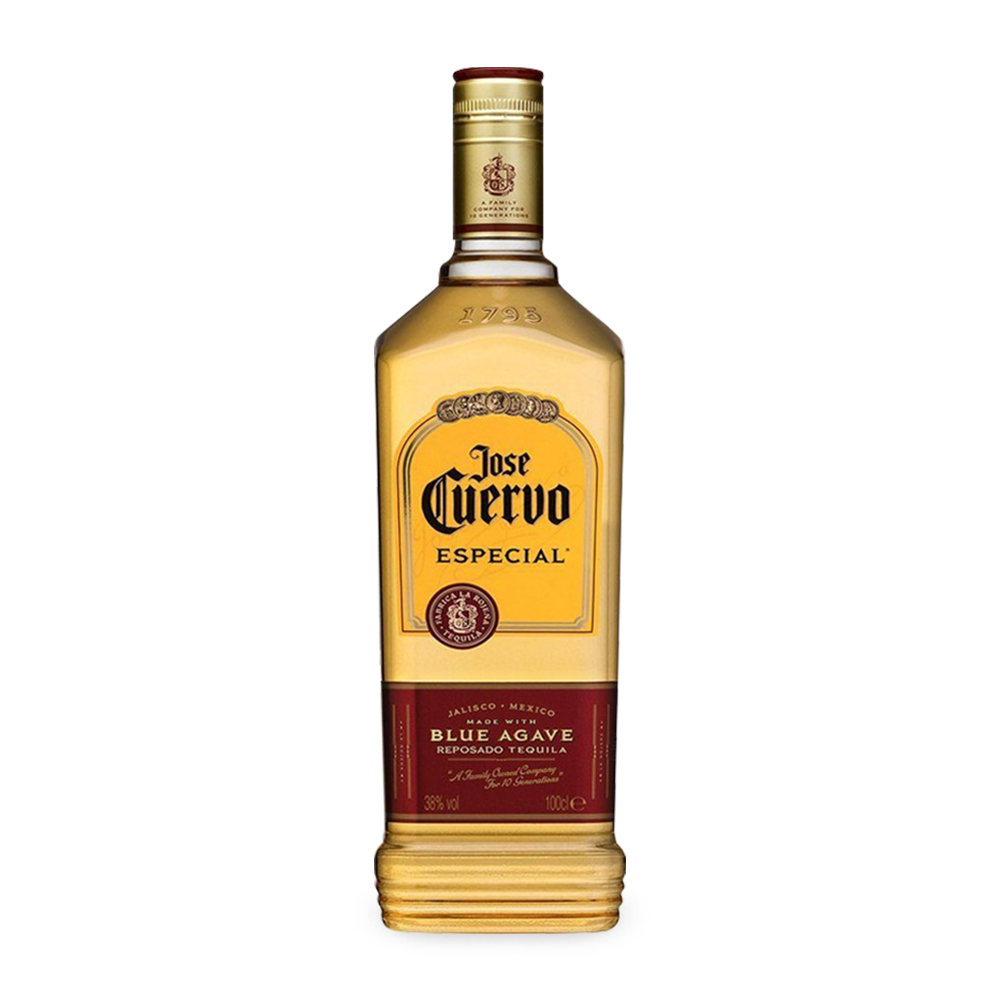
P950.00
It is a distilled spirit made from the agave plant that can only be produced in certain regions of Mexico. There are several styles of tequila and specific regulations that distillers must follow. Tequila is enjoyed globally and is most often consumed in Mexico and the U.S.
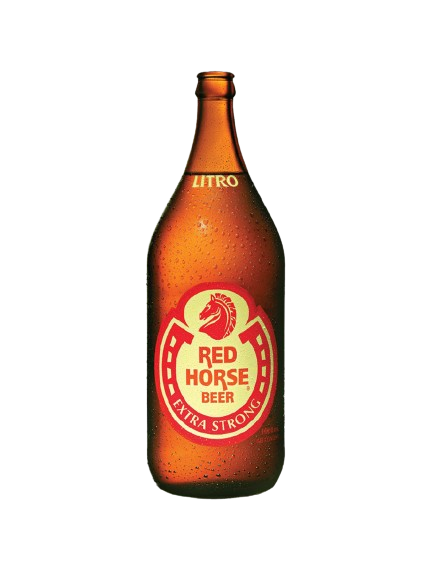
P190.00
It is an extra strong beer that gives you the true pure alcohol experience. Rebellious and tasty but also bold and intense. It is a sweet and bitterly soft, gives you an energetic experience. Treat yourself with this wonderfully distinctive type of beer.
5
Add-Ons (Complementos)
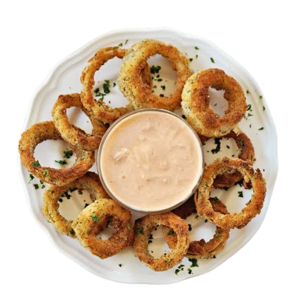
P50.00
These are a popular appetizer at many restaurants, and with this recipe, you can satisfy your craving at home. This is an actual recipe from a former employee of a popular drive-in restaurant. Sweet and tender on the inside, crispy and crunchy on the outside — just like the pros make!
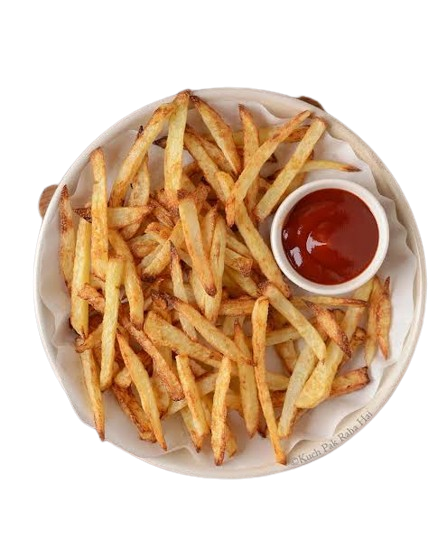
P30.00
It is a side dish or snack typically made from deep-fried potatoes that have been cut into various shapes, especially thin strips. Fries are often salted and served with other items, including ketchup, mayonnaise, or vinegar.
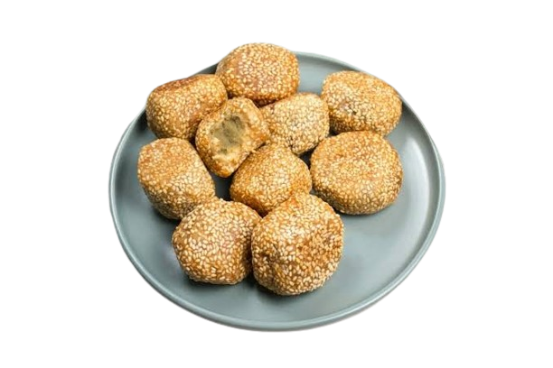
P30.00
Buchi, also known as sesame balls, are golden, chewy, and extra delicious with sweetened red bean filling. Delicious as a snack or dessert!